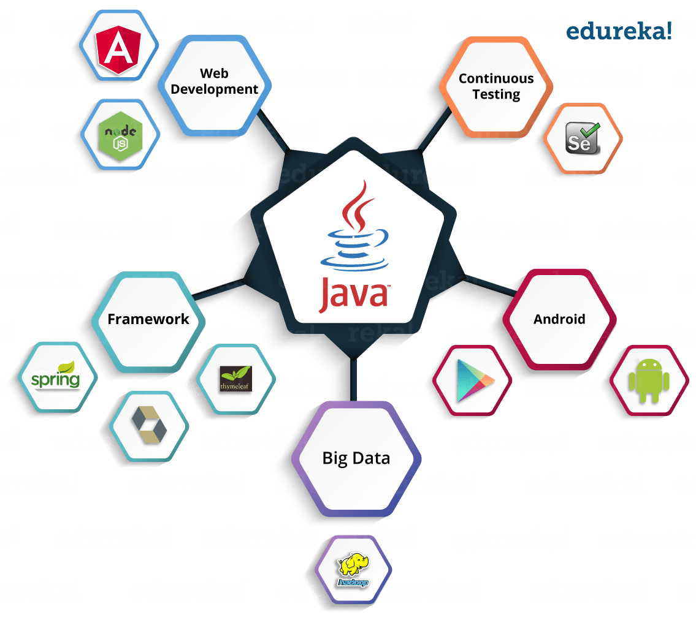

Một số ngôn ngữ lập trình cơ bản cho người mới bắt đầu học lập trình
PHP
PHP là mã nguồn mở, miễn phí, hỗ trợ người dùng xây dựng website với chi phí tiết kiệm nhất. Nhờ đó, PHP đã trở nên phổ biến một cách rất nhanh chóng trong những năm qua. Ngay cả những ông lớn như Facebook, Yahoo!, Wikipedia cũng sử dụng tới PHP.
Hiện nay, hầu hết các trang Web bạn tiếp xúc đều được xây dựng từ PHP. Đây có lẽ cũng là lý do mà phần lớn doanh nghiệp hiện giờ đều ưu tiên tuyển dụng những lập trình viên thông thạo ngôn ngữ này. Tính cộng đồng cao chính là một ưu điểm vượt trội của PHP.
Bên cạnh đó, một điểm mạnh khác của PHP đó là có khá nhiều CMS, Framework được xây dựng từ PHP giúp rút gọn quá trình tạo một website. Vì vậy, trên thế giới có khá nhiều lập trình viên sử dụng PHP để xây dựng dự án cho riêng họ hoặc cho khách hàng của họ.
Java
Xét về mức độ phổ biến, Java cũng không kém phần PHP. Đây là ngôn ngữ lập trình được sử dụng nhiều thứ 3 trên thế giới. Nhắc đến Java là nhắc đến những ứng dụng phần mềm trên di động. Nhưng thực tế, ngôn ngữ này còn làm được nhiều điều hơn thế.
Java là một ngôn ngữ lập trình hướng đối tượng, có đặc trưng sâu sắc dựa trên lớp (class-based), được thiết kế để có thể hoạt động đa nền tảng. Do vậy, một nhược điểm không thể không nói của Java đó là sự phức tạp và khó nắm bắt.
Python

Được phát triển từ những năm 80s bởi Guido van Rossum, Python cũng năm trong danh sách ngôn ngữ lập trình phổ biến và dễ tiếp cận. Python là ngôn ngữ mã nguồn mở và sử dụng miễn phí, thậm chí cho các ứng dụng thương mại.
Theo đó, Python cho phép các lập trình viên tạo ra một số lượng lớn code dễ đọc trong một khoảng thời gian ngắn. Nhưng Python cũng là một ngôn ngữ dynamic, hỗ trợ hướng đối tượng và có phong cách lập trình chức năng như những ngôn ngữ khác. Bởi tính mềm dẻo, Python là một trong những ngôn ngữ lập trình bậc cao được sử dụng rộng rãi nhất ngày nay.
C và C++

C và C++ là khá quen thuộc với hầu hết các sinh viên trong ngành công nghệ thông tin. Bởi, hai ngôn ngữ này thường được đưa vào chương trình giảng dạy ngay từ những năm đầu.
C/ C++ được mệnh danh là nền tảng của khoa học máy tính và lập trình. Tuy nhiên, C và C++ được đánh giá là rất khó để học. Dù vậy, nếu nắm được chắc hai ngôn ngữ này, bạn có khả năng học sang ngôn ngữ khác rất nhanh bới hầu hết các ngôn ngữ đều được phát triển từ một hay một vài khái niệm của C/ C++.